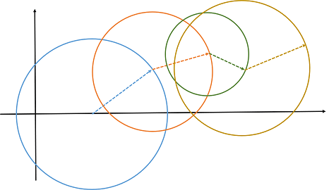
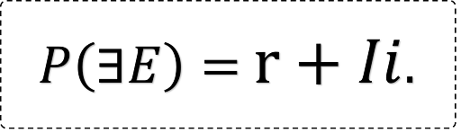
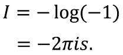
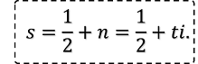
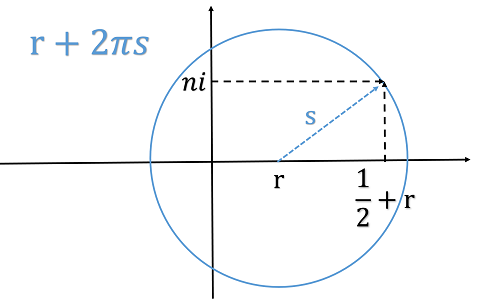
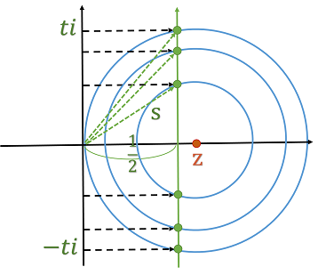

リープグラフと複素確率
リープグラフは，座標におけるグラフである．辺が半径の長さ，節は辺の始点の座標である．今年はうるう年であるが，リープとはリープイヤーのリープであり，うさぎがぴょんぴょん跳ねたときの跳ねあとに似ていることから名付けた．どこか台風の進路予想図やあめんぼの通った水面にも似ている．節と節があるとき，辺は，はである．辺を半径とする円の周は辺にを掛けた値となり，辺を半径とする円の積は辺を二乗してを掛けた値である．
リープグラフの売りは，複素平面で記述するとき発揮される．複素平面では確率を0から1に限らなくてよいことはご存知だろうか．一般に事象が存在する複素確率をとする．が0から1のときはコルモゴロフの意味での確率である．はシャノンの情報量である．
ここで注意しておくが，シャノンの情報量も複素数にしてよい．はと表せるが，が複素数のとき，も複素数になる．であるから，実数を実部に，純虚数を虚部にとる．なお，はと表せる．は実部がの複素数である．
さて，一般に，情報を得ても確率は変わらない．情報は確率に影響を与えないのである．情報が影響を与えるのは，反対の事実を認識する場合である．事実Aが起きたのにもかかわらず，情報Xが確率でAかBかを示すとき，事実Aを導かずにBと認識してしまう場合である．逆手に取れば，ある情報が一方的に受け取られており，事実はその逆であることを分かっていると，特に相場では大きな利益を得られることが多い．
モンティ・ホール問題や3囚人問題において，情報を得る前後で確率は変わらないが，確率にまつわる何かが変わっている．それが確率の絶対値である．情報によって確率の絶対値は大きくなる．と定義したのはそれを表現するためである．確率の絶対値は円周である．確率の絶対値をで割ると，円の半径が求まる．つまり，なのである．辺がのリープグラフになる．
円の中心がで半径がの場合，である．この中心をに延ばしてみたい．すると，となり，だから，である．特にのとき，である．
辺がで節がのリープグラフは，グラフ理論を用いて計算できていく．すると，実数においてとするときに，はの場合にのみどうしてとなるのかについての手掛かりになる．情報をたくさん得るほどに確率の絶対値はいくらでも大きくなれる．けれども，いくら情報を集めても，これから起こすすべての事象を知り尽くしておられる神に匹敵できるはずがない．法則を知り事実を予想し続けることのほかに，未来を見通す方法はあるのだろうか．